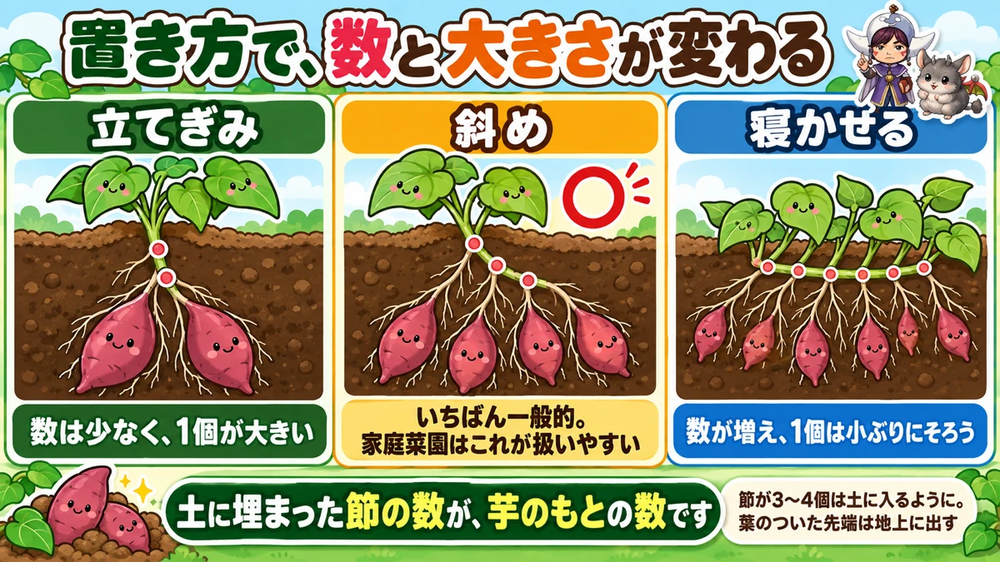
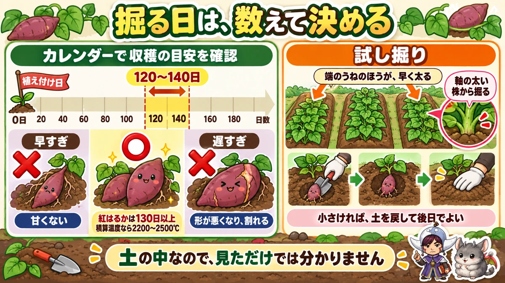
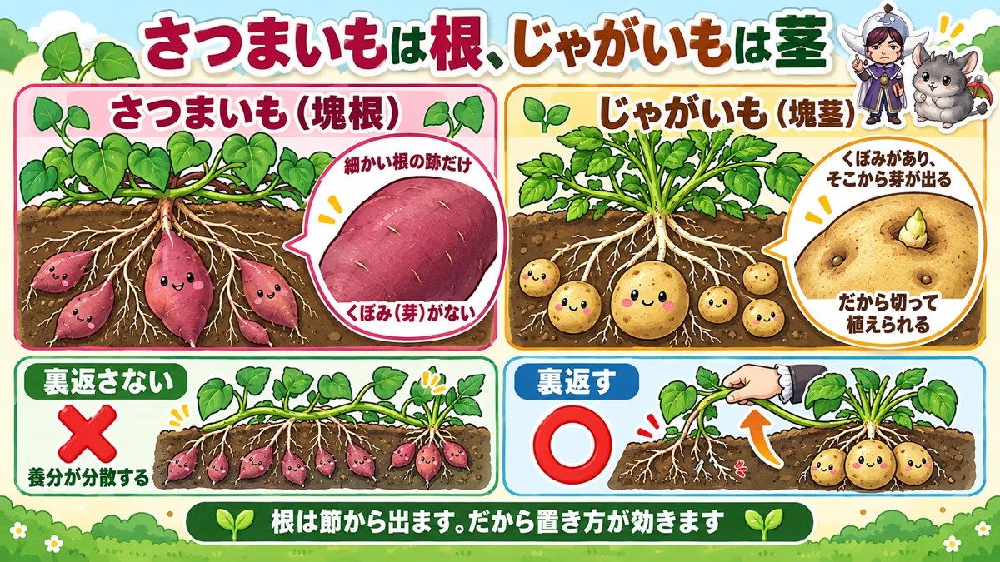

The tubers form at the buried nodes 🍠 So how you lay the slip decides the crop

🍠 "Masses of leaves, and nothing under the ground."
🍠 "The slips died within days of planting."
🍠 "I have no idea when to dig them."
Hello, I'm Eiko. Eight years of growing vegetables organically and without pesticides, and a teaching licence in science.
The headline:
Tubers form at the nodes you bury.
Which means how you lay the slip changes both the number and the size.
No fertiliser at all
This is where sweet potatoes differ most from everything else. Don't feed them. On ground that grew something else previously, the residue is plenty.
What happens if you do
Leaves and stems everywhere and almost no tubers. In Japanese it's called tsuru-boke — roughly, "vine-addled". Excess nitrogen especially.
You admire how vigorous it looks, and then dig and find nothing. I did exactly that in my first year.
Poor ground? Compost, not fertiliser
If you're worried about a new plot, use compost: about 2–3 L of well-rotted manure per 1.6 m² (per 2 yd²), dug in 2–3 weeks before planting.
And: drainage and sunlight matter more than technique. Prioritise those above everything.
How you lay the slip decides it

What this diagram says （図解の文字）
- The angle changes the number and the size
- Upright-ish — "fewer tubers, each one larger"
- ○ Diagonal — "the most common. Easiest to handle in a home garden"
- Laid flat — "more tubers, each one smaller and more even"
Tubers come from the nodes
A sweet potato slip is a cut length of vine with leaves. It has no roots.
Push it into soil and roots emerge from the nodes — and some of those roots swell into tubers.
So the number of nodes you bury is the number of potential tubers.
Which is why the angle matters
- Upright-ish — few nodes buried → fewer tubers, each larger
- Diagonal — in between. The usual method
- Laid flat — many nodes buried → more tubers, smaller and more even
There's no correct answer. Choose by what you want to harvest.
For a home garden I'd use the diagonal — a reasonable number, reasonably even in size. Want them for baking? Go more upright. Want lots to give away? Lay them flatter.
Depth
Whatever the angle, get three or four nodes into the soil, and leave the leafy tip above ground — don't bury that.
The first two weeks are the dangerous part
They dry out before they root
A surprisingly common failure: the slip dies within days of planting.
It has no roots. It's sitting in full sun unable to take up water.
And the mulch film gets hot
With black film down, the surface gets very hot — on a clear day it can be too hot to touch. For a slip that hasn't rooted yet, that's punishing.
Fleece, for two weeks
The fix is simple: lay one or two sheets of fleece loosely over them. They root in about two weeks, and then you take it off.
Since I started doing this, I've had no planting failures at all.
Potted plants beat bare slips
Garden centres also sell rooted plants in pots. They fail far less often, and you can buy a few rather than a bundle. For a home garden, I'd recommend those — you rarely need ten or twenty.
Summer: just the vine-turning
Once planted, there's almost nothing to do. One job: turning the vines.
Why turn them
As the vines run, roots come out of the nodes that touch the ground — and the plant starts trying to make tubers there too, so the resources are spread thin.
So you lift the vines, flip them over and break those roots.
Some now say it's unnecessary
To be straight with you: the view that vine-turning is no longer needed has been gaining ground. Two reasons:
- Modern varieties form fewer tubers at the intermediate nodes
- Pulling the vines up can damage the plant more than it helps
I can't say which is right. I've done it every year, so I have nothing to compare it with. What I'm confident of:
- If the vines are overrunning the paths, tidying them is worthwhile
- If a node has rooted firmly, turning it is worthwhile
- Lift one and look — no roots, put it back
"Always do all of it" is probably best replaced by "look, then decide". This year I'm leaving a few plants undone so I can compare at harvest.
Also: draw soil over exposed tubers
While you're there, check something else: are any tubers breaking the surface?
As they fatten they can push out around the shoulder of the bed, and once exposed, that tuber stops growing.
- Hold the vines aside and draw soil over the whole bed
- Cover the tubers completely
- Where the vines are in the way of a hoe, heap soil with a trowel
Walk the rows just looking for "is anything showing?"
Never feed mid-season
Late in summer the leaf colour can look poor, as though growth has stalled, and the temptation is to feed.
Feed at that point and tuber growth stops there.
This is a crop that gets no base fertiliser at all — mid-season feeding is even less appropriate. Poor leaf colour or not, wait.
And no watering
Sweet potatoes tolerate drought well. Unless there's a serious drought, don't water. No fertiliser, no water — among the least demanding vegetables there are.
The exception is a year with no rain at all. One sign: leaves curling inward means it's short of water. Then, take the rose off the can and water slowly and heavily along the top and between the beds.
But overdo it and you get vine-addled growth. Only in a genuine drought.
Animals arrive before you do
As the tubers fatten, something notices before you do — wild boar, palm civets, rats. The few weeks around the start of the harvest window are the worst.
- Put in 150 cm (5 ft) canes and fence just the bed with animal netting
- Pin the hem to the ground — civets and rats come in under the edge
Once they've learned the taste they come back next year. Preventing the first visit is what counts.
Decide the digging day by counting

What this diagram says （図解の文字）
- Decide the digging day by counting
- "Mark the harvest window on a calendar" — planting day → 120–140 days
- A scale from 0 to 180 days
- ✗ "too early — not sweet" ／ ○ — "some varieties need 130 days or more"
120–140 days
Like a melon, you can't tell by looking — and it's underground, which makes it worse.
Count 120–140 days from planting. Some varieties want 130 days or more.
More precisely: accumulated temperature
Harvest time is at roughly 2,200–2,500 degree-days. So a hot summer means digging earlier than usual.
"Wait for the leaves to yellow" no longer works
The traditional signal was yellowing leaves. With modern summers that's unreliable: the accumulated temperature is reached first, so the leaves are still green when the crop is ready.
Wait for leaf colour and you dig too late. Trust the count.
How to look up degree-days
Agricultural research institutes and extension services publish regional figures, and there are online calculators that take a planting date and a location and tell you when the total is reached. Look up your own area once and you can reuse the number every year.
Too early and too late are both wrong
- Too early — the flavour hasn't developed. Not sweet
- Too late — oversized, misshapen, and they split
Both happen out of reluctance to commit. Count, and then dig one as a test.
Test-dig from the end of a bed
- The outer beds fatten sooner than the middle ones
- Dig a plant with a thick stem at the base
One thick plant at the end of a bed tells you about the whole plot.
Too small? Put it back
Restore the soil and the path and leave it. It carries on growing — digging one up isn't the end of it.
Science bit: the tuber is a swollen root 🍠🔬

What this diagram says （図解の文字）
- A sweet potato is a root; a potato is a stem
- Sweet potato (storage root) — "only fine root scars", "no dimples (buds)"
- Potato (tuber) — "dimples, and buds come out of them" — "which is why you can cut it"
Both are dug out of the ground, and they're fundamentally different things:
- Sweet potato — a swollen root (a storage root)
- Potato — a swollen stem (a tuber)
You can see it
Look at a potato: dimples on the surface, with buds coming out of them. Those are the buds at the nodes of a stem — which is why a potato can be cut up and planted.
A sweet potato has no such dimples, only fine root scars.
Which is why the angle matters
Now it joins up. A sweet potato is a swollen root, and roots come from nodes. A node not in the soil produces no root, and therefore no tuber.
That's the mechanism behind "the angle decides the number".
And vine-turning follows the same logic
An intermediate node touching the ground roots, and the plant tries to make a tuber there too — but the soil is shallow there and the supply is poor, so you get lots of small tubers and the main crown doesn't fatten. Hence flipping the vine and breaking those roots.
And the "vine-turning is unnecessary" argument is the same logic read the other way: if a variety barely forms tubers at intermediate nodes, there's that much less reason to turn it. Understand the mechanism and you can read new claims as "ah — that's the part that changed".
To sum up
- ✅ Beds 1 m wide, plants 30 cm apart, black mulch film
- ✅ No fertiliser. The previous crop's residue is enough
- ✅ Excess nitrogen = all vine, no tubers
- ✅ Drainage and sunlight beat technique
- ✅ Tubers come from roots at the buried nodes
- ✅ Upright = few and large; flat = many and small. Diagonal for a home garden
- ✅ Bury three or four nodes, tip above ground
- ✅ The first two weeks are the risk. Fleece over them
- ✅ Potted plants fail less than bare slips
- ✅ Cover any tuber breaking the surface, and never feed mid-season
- ✅ Count 120–140 days, or 2,200–2,500 degree-days. Leaf colour is no longer a signal
- ✅ Test-dig a thick plant at the end of a bed; too small, put it back
- ✅ A sweet potato is a root; a potato is a stem
You don't have to do all of it. After planting, put fleece over them for two weeks. Get past that and it's an easy crop 🍠
Thank you for reading!